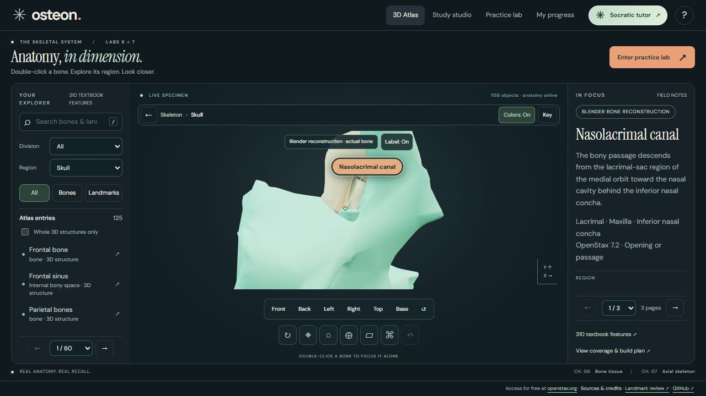
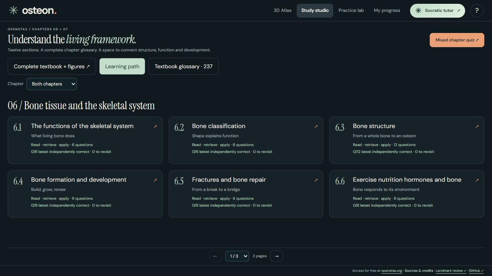

Find your bearings.
Double-click into a region. Rotate the skeleton and compare neighboring bones with optional regional colors.
Get hands-on with the skeleton. Explore a region in 3D, find its landmarks, then see what you can remember.
Free to open · No account needed · Desktop + phone
Silent, with captions in the picture. Captions and a text transcript are also available.
Double-click into a region. Rotate the skeleton and compare neighboring bones with optional regional colors.
Inspect named landmarks and passages. Keep a label on while learning, then hide it to retrieve the name.
Name the numbered target and check your answer. Return to chapter notes, questions, and the textbook reader.




The vertical edit shows the corresponding phone specimen, landmark, recall feedback, and study studio. These are real browser captures from an isolated demonstration session. Cuts and caption graphics were added; the interface and grade feedback were not fabricated. No personal study history appears.
Capture date: October 19, 2026. Silent by design; no third-party music. Some models are teaching reconstructions, identified in the app. Unresolved targets remain excluded from scored locating. See the current accuracy review.